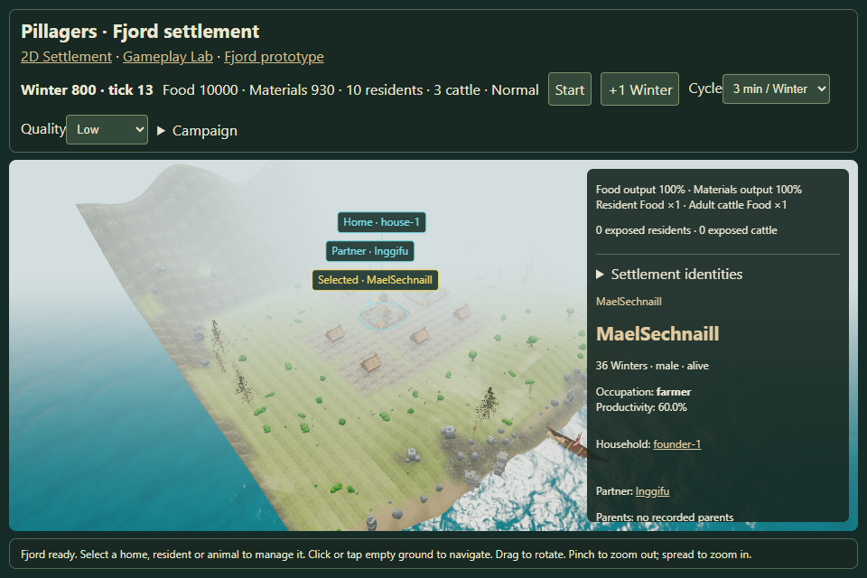
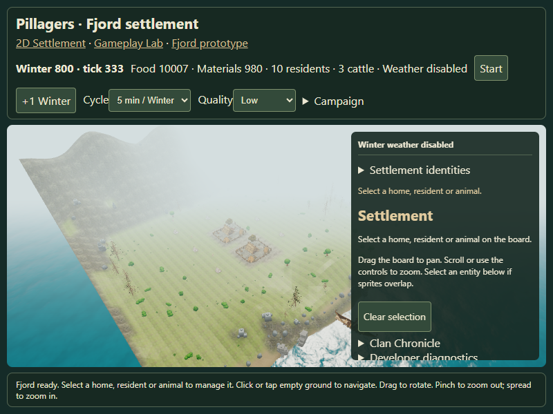
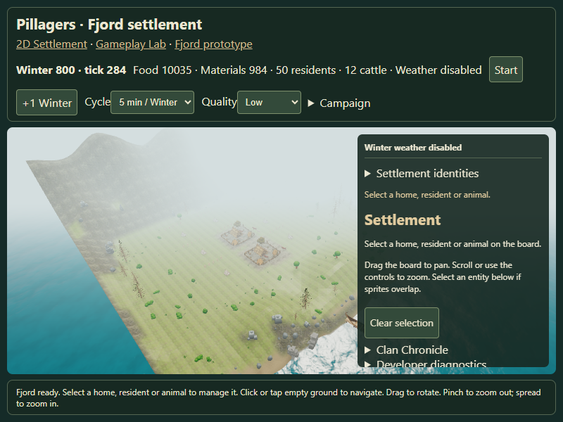
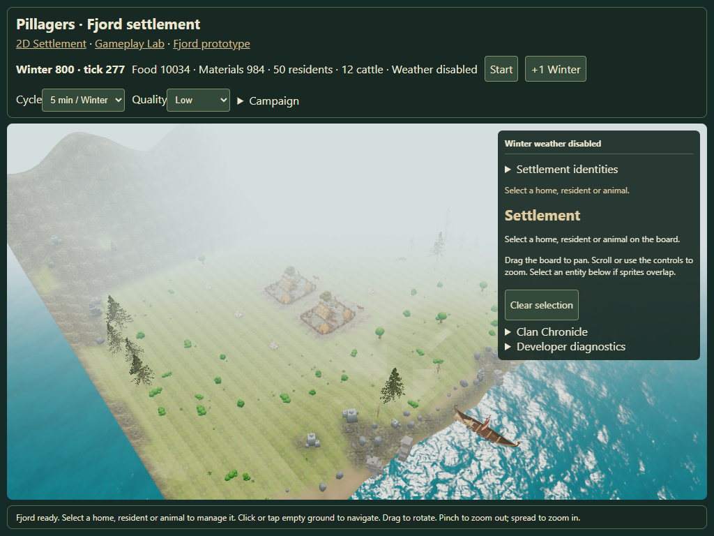
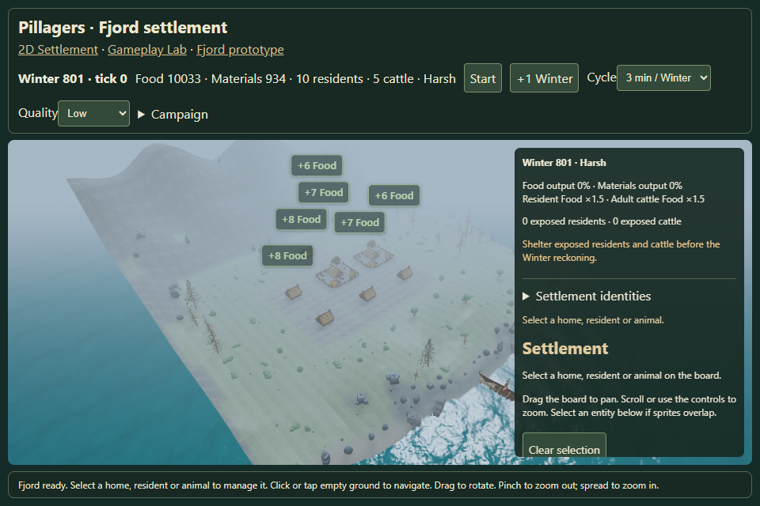
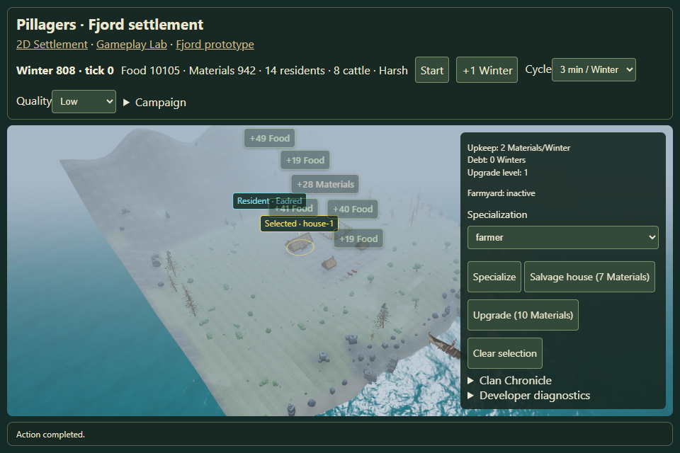
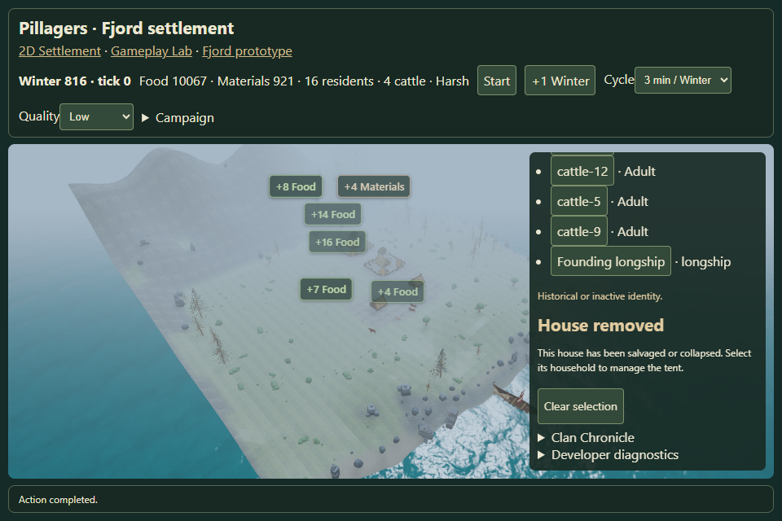
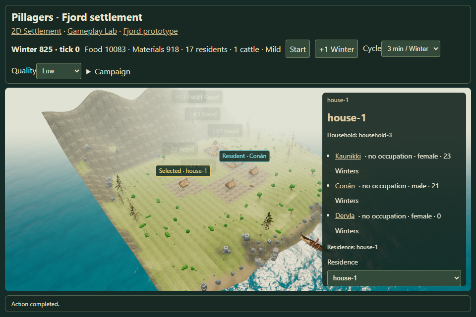

Living Fjord v0.6C stability review
25 seeded Winters, controlled 10/25/50-resident runs, touch selection and one resident label. See the report for hardware, outliers and evidence limits.

One name-and-line label; traits and heritage in management
10 residents / 3 cattle25 residents / 12 cattle
50 residents / 12 cattle
50 residents / tablet touch viewport
Winter 801
Winter 808
Winter 816
Winter 825